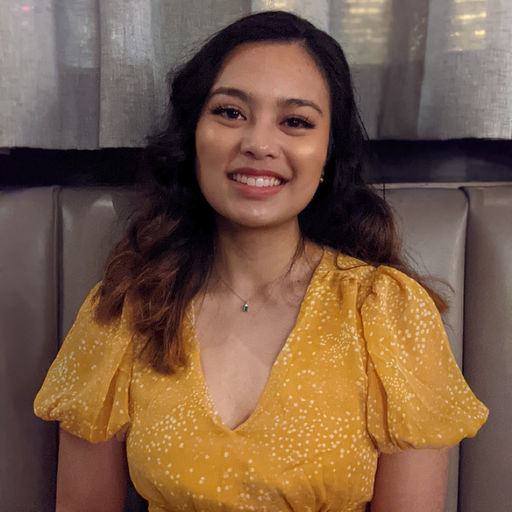

About Me

Introduction
Hi there! My name is Keona Mae Pablo and I am a fourth year cognitive science
major and digital humanities minor at UCLA. I am from a small town in California
about 3 hours north of LA named Santa Maria. One fun fact about me is that
I enjoy building video games as a hobby (I have created two so far and working on one
right now!). I currently work as a project manager for the UCLA DataSquad and an Accessibility
Engineer for the UCLA Disabilites and Computing Programs. I am also a board member at
Creative Labs. When I am not studying, you can find me exploring Los Angeles, playing video games,
or building Lego Architectures! If you want to learn more about me, check out my
LinkedIn.
Goals for this course
In this course, I am really excited to learn some new technologies and expand my
knowledge in digital tools. I have been wanting to learn some JavaScript for a while
and I believe this is a really fun way to go about it. I have also learned some GIS technologies
in other classes and I think it would be interesting to deepen my understanding of maps
and the innovative ways maps can tell stories.
Check out cool projects that I have made!
-
19th Century Children's Books
-
Digital Humanities project
-
Made in 2020
-
Worked as a project manager
-
Splekbot
-
ACM Studio project
-
Made in 2020
-
Worked as a game developer
-
Ucla Survival Guide
-
My first hackathon project
-
Made in 2020
-
Worked as a developer